Q. loss_D also depends on G's weights, through the fake. Should backward() reach them?
No: this step trains D only. detach() keeps the numbers in fake but forgets how G made them.
An experiment: freeze G, run only the D step
D learns to say "fake" exactly where the fakes are
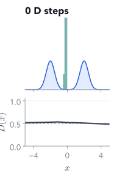
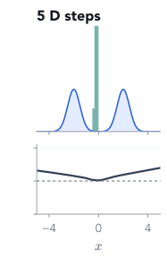
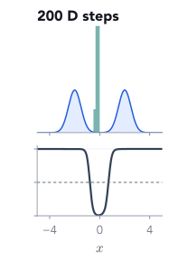
Q. G's fakes sit in one spike near 0 and never move. What should D's curve turn into?
After 200 D steps: $D = 0.01$ at the fakes, $1.00$ on the bumps, and also $1.00$ at $x = 4$, where there is no data at all.
Part 2 of 5
Training G through D
G never sees a real image and has no target output. Its only teacher is D: move each fake towards where D says "more real", and change G's weights so that it does.
✓Two players, one game
2Training G through D
3The minimax objective
4A GAN on MNIST
5Failures and control
Step 2 of each iteration: what would fool D?
G step: push every fake uphill on $D(x)$
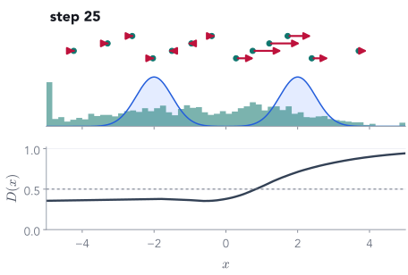
$$\mathcal L_G = -\log D(\cdec{G(z)})$$
The same BCE, but now the fakes are labelled 1: "make $D$ call these real".
Our fake at $x = 0.0$: $D = 0.38$, so $\mathcal L_G = -\log 0.38 = 0.97$. Raising $D$ there lowers it.
Red arrows: which way $D(x)$ increases at each fake, from D's real slope at step 25.
G cannot move the fakes directly. It changes its weights $\theta$ so that its outputs move along the arrows.
Where G's gradient comes from
The chain rule runs through D
$$\frac{\partial \mathcal L_G}{\partial \theta} = \underbrace{\frac{\partial \mathcal L_G}{\partial D}}_{=\,-1/D} \cdot \underbrace{\frac{\partial D}{\partial x}}_{\text{slope of } D \text{ at the fake}} \cdot \underbrace{\frac{\partial x}{\partial \theta}}_{\text{how } \theta \text{ moves the fake}}, \qquad x = G_\theta(z)$$
$\partial D/\partial x$: which way is "more real" at this fake. For ours it is $0.08$: more real to the right. Uses D's weights, does not change them.
$\partial x/\partial\theta$: ordinary backprop through $G$, spreading the push over G's weights.
First two factors for our fake: $−2.63 \times 0.08 = −0.21$. Negative, so a gradient step moves it right, towards bump B.
Update G, hold D fixed
G step: lock D's weights, keep the wire
D.requires_grad_(False) # lock D's weights, keep the pathloss_G = bce(D(G(torch.randn(B, zdim))), ones) # fresh fakes, no detachopt_G.zero_grad(); loss_G.backward(); opt_G.step(); D.requires_grad_(True)
The most common GAN bug
Freezing is not detaching
Q. The wire from G to D is cut. Does G get any gradient from this loss?
Q. Now D's weights are locked but the wire is intact. Does G learn?
Detach the fake in the G step and loss_G still prints a number, but G never learns. A silent failure.
The opposite experiment: freeze D, run only the G step
Against a judge that stops learning, G overshoots
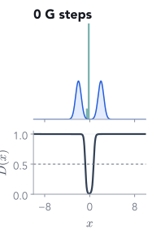
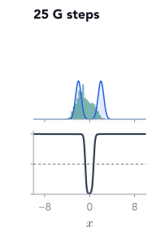
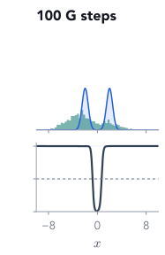
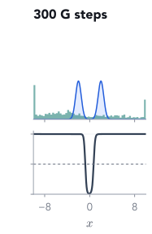
Wider axis than before ($-10$ to $10$); fakes beyond it are piled at the edges.
Q. D (bottom) is the D from the Part 1 experiment, now frozen. Where will the fakes go?
After 300 G steps, 78% of the fakes are beyond $\pm 3$: G goes wherever D says "real", data or not. So D must keep learning, and the two steps alternate.
Now alternate the two steps, 3,000 times
Watch the game on the toy data
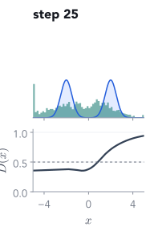
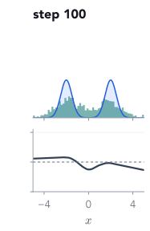
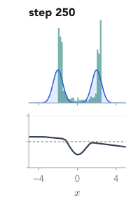
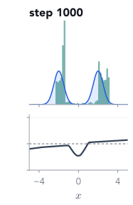
By step 3,000 the fakes cover both bumps, and $D(x)$ is near 0.5 wherever the data is: it can no longer tell.
Part 3 of 5
The minimax objective
Textbooks write the whole game as one formula. Reading it slowly shows that our code trains G with a slightly different loss, and why that is a deliberate fix.
D maximises: high $D$ on real data, low $D$ on fakes. This is exactly our $-\mathcal L_D$, averaged.
G minimises: only the second term involves $G$. It wants $D(G(z))$ high.
With a perfect $D$, G's best move is $\pg = \pd$ (Goodfellow et al. 2014; derivation in the appendix). Real training, with finite networks and steps, has no such guarantee.
Careful: here G minimises $\log(1 - D(G(z)))$, but our code minimised $-\log D(G(z))$. Same goal. Why switch?
Which were real, and what did our discriminator think?
1fake · D 0.54
2real · D 0.45
3fake · D 0.55
4real · D 0.47
5real · D 0.50
6fake · D 0.50
7fake · D 0.39
8fake · D 0.42
9real · D 0.55
10fake · D 0.46
11real · D 0.48
12real · D 0.43
Q. Our trained D outputs $P(\text{real})$ for each tile. What numbers do you expect?
Every tile gets between 0.39 and 0.55. At the end of training, D can barely tell either.
Part 5 of 5
Failures and control
Every sample can look real while the model misses whole kinds of data, and the loss curves will not warn you. Then: how to ask a GAN for a particular digit.
✓Two players, one game
✓Training G through D
✓The minimax objective
✓A GAN on MNIST
5Failures and control
The classic failure
Mode collapse: perfect samples of only one kind
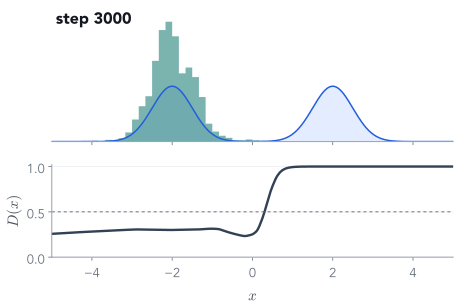
Same data, same training loop, but G has only 4 hidden units per layer.
After 3,000 steps: 95% of samples sit on bump A, 0% on bump B.
Every sample looks real. Bump B is never generated. Picking your favourite samples would never reveal it.
D knows: $D(+2) = 1.00$. But around bump A its curve is flat ($D \approx 0.30$, slope at most $0.04$), so no fake feels a push towards B.
Like last lecture's reverse-KL fit: commit to one mode and ignore the rest.
So how do you know it worked?
The loss curves cannot tell these two runs apart
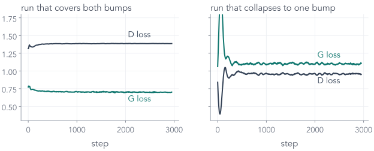
Both curves go flat. Only the samples show that one run lost half the data. Always look at samples, from fixed $z$, across training.
Asking for a particular digit
Conditioning: tell both players what you want
Q. Give the label to G only. What stops G from ignoring it?
Nothing, unless D sees $c$ too: then a perfect 3 labelled "7" is caught as fake.
pix2pix (Isola et al. 2017) uses a whole sketch as the condition $c$, with an extra L1 term to the target photo.
Wrap-up
One GAN iteration, in four sentences
D step: binary cross-entropy, real → 1, fake → 0, with the fake detached so G gets nothing.
G step: fresh fakes labelled 1; D's weights locked, but the gradient flows through D's input into G.
Loss: minimise $-\log D(G(z))$, not $\log(1 - D(G(z)))$: same goal, no vanishing slope early on.
Judge by samples from fixed $z$, not by the losses, and look for missing modes.
✓Two players, one game
✓Training G through D
✓The minimax objective
✓A GAN on MNIST
✓Failures and control
Before you leave
Three exit questions
In the G step, why do we lock D with requires_grad_(False) instead of detaching the fake?
G's gradient is $-\frac{1}{D}\cdot\frac{\partial D}{\partial x}\cdot\frac{\partial x}{\partial\theta}$: it must pass through D's input. Detaching cuts that path and G learns nothing; locking only stops D's weights from changing.
Why does the code train G on $-\log D(G(z))$ rather than minimising $\log(1 - D(G(z)))$?
Early on $D(G(z)) \approx 0$. With respect to D's logit the minimax slope is $-D \approx 0$; the non-saturating slope is $D - 1 \approx -1$. Same fixed point, a push that does not vanish.
Two toy GANs both end with flat, similar losses. How would you find out that one of them has collapsed?
Look at its samples from fixed $z$ next to the data: 95% on bump A and 0% on bump B. Each sample looks real; the missing bump only shows in the distribution.
Appendix
Derivations for reference
The optimal discriminator, and why a perfect D turns the game into minimising the Jensen–Shannon divergence.
Appendix A · for a fixed G
The optimal discriminator
the objective$V(D) = \displaystyle\int \Big[\pd(x)\log D(x) + \pg(x)\log\big(1-D(x)\big)\Big]\,dx$one $x$ at a time$f(y) = a\log y + b\log(1-y), \quad y = D(x),\; a = \pd(x),\; b = \pg(x)$set the slope to 0$f'(y) = \dfrac{a}{y} - \dfrac{b}{1-y} = 0 \;\;\Rightarrow\;\; a(1-y) = b\,y \;\;\Rightarrow\;\; y = \dfrac{a}{a+b}$so$D^*(x) = \dfrac{\pd(x)}{\pd(x) + \pg(x)}$
Where G puts no mass, $D^* = 1$; where $\pg = \pd$, $D^* = \tfrac12$. Our collapsed toy run never generates bump B, and its learned D there is $1.00$.
Appendix B · plug $D^*$ back in
With a perfect D, G minimises the Jensen–Shannon divergence
$\JS \ge 0$, and $\JS = 0$ only when $\pg = \pd$: the best G reaches $V = -\log 4 \approx −1.386$, with $D^* = \tfrac12$ everywhere. Idealised: real D and G are finite networks trained for finitely many steps.
Goodfellow et al., Generative Adversarial Nets, NeurIPS 2014, Theorem 1.
Further reading
Where to go next
Goodfellow et al., Generative Adversarial Nets, arXiv 1406.2661: the game, $D^*$ and the non-saturating loss
Radford, Metz & Chintala, DCGAN, arXiv 1511.06434: the convolutional recipe our small MNIST G and D loosely follow
Lilian Weng, From GAN to WGAN (lilianweng.github.io): why GAN training is hard, and what WGAN changes
Isola et al., pix2pix, arXiv 1611.07004 · Karras et al., StyleGAN, arXiv 1812.04948
This lecture's code: scripts/train_models.py (both GANs, gan_step) and scripts/make_figures.py (every number on the slides)